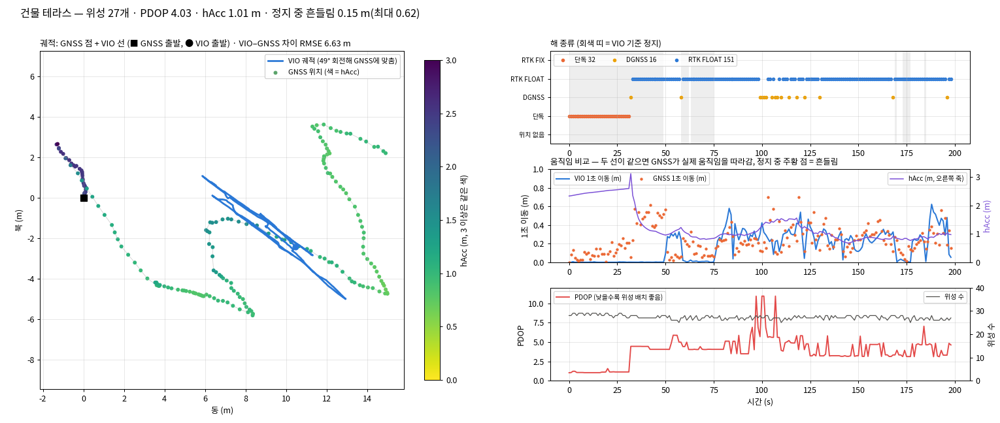
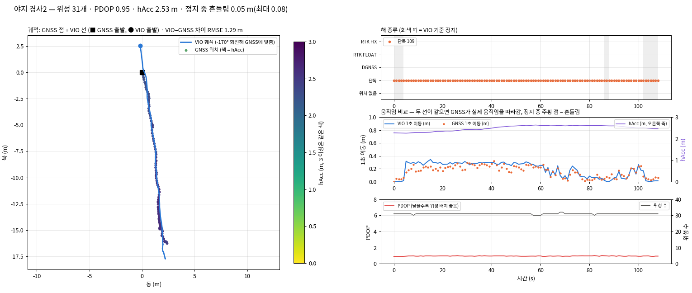
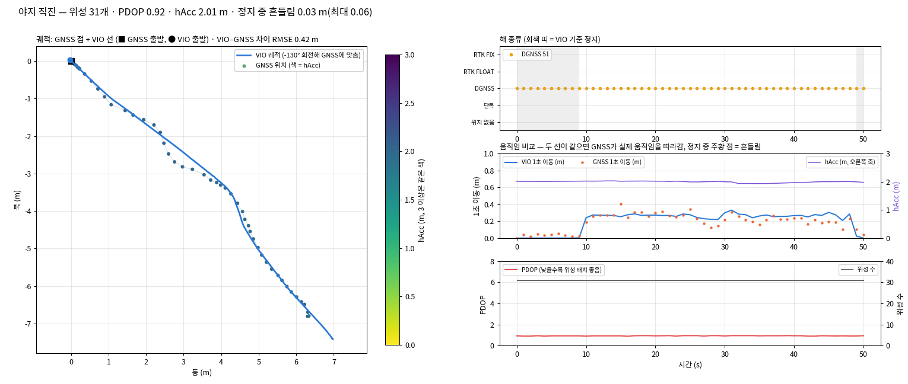
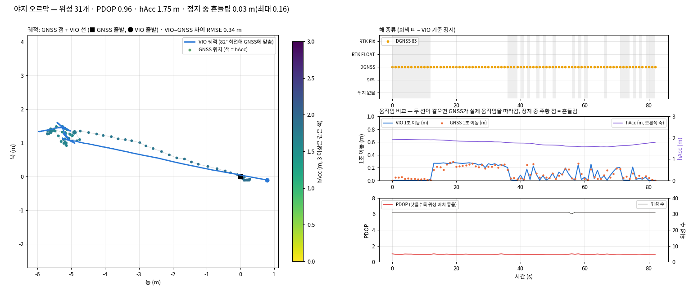
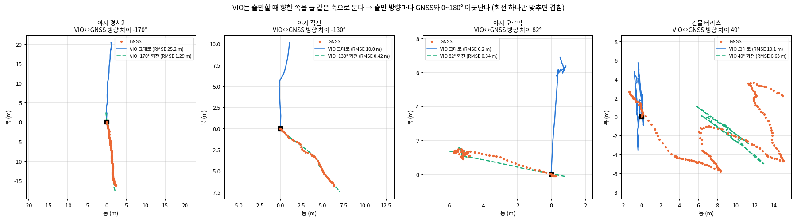
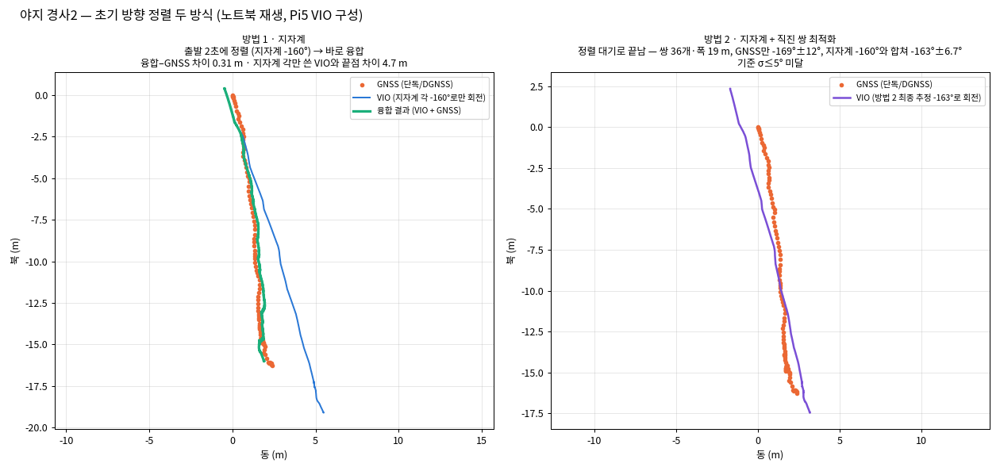
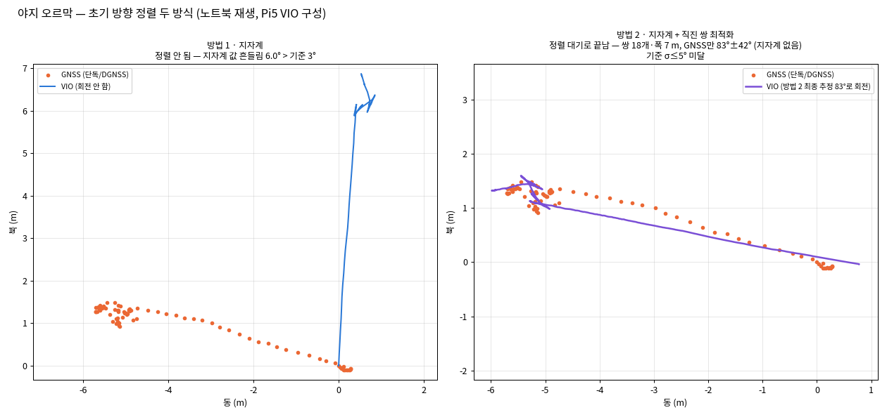
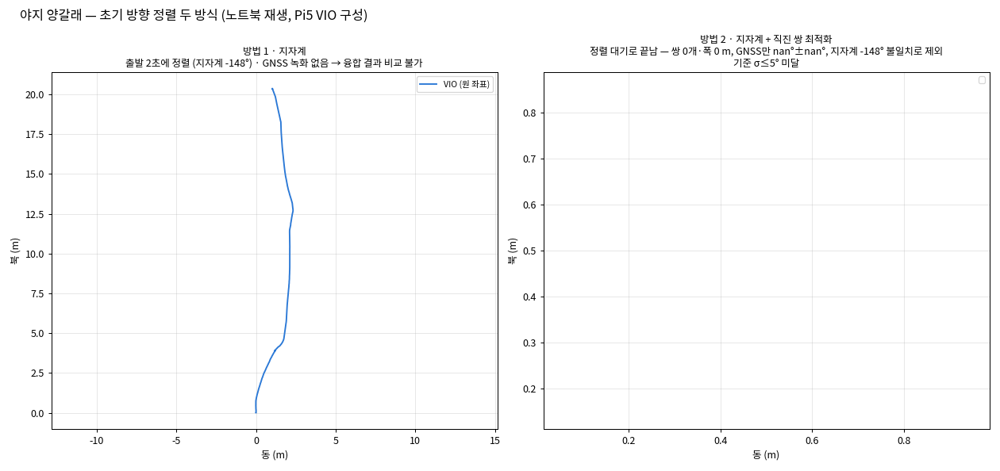
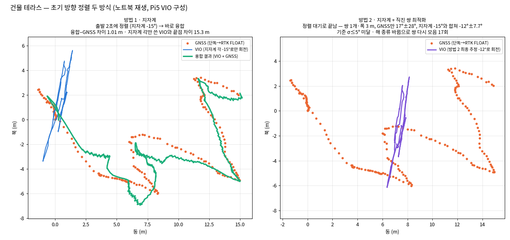

위치추정 — GNSS 상태와 VIO·GNSS 방향 정렬
VIO는 주행할수록 위치 오차가 쌓여 GNSS 절대 위치로 보정하려 한다. 11/16 야지 녹화 4개와 11/17 건물 테라스 녹화 1개를 노트북에서 재생해(Pi5 VIO 구성: health + 자동 재시작, 장착각 +2.49° 보정) GNSS가 장소마다 어떻게 다른지, 그리고 VIO와 GNSS의 방향을 맞추는 두 방식을 비교했다. 보드 설정은 바꾸지 않았다(시험용 융합기는 노트북 사본).
결론 요약. ① GNSS 품질은 위성 수보다 하늘이 트인 정도(PDOP)가 좌우했다. 야지는 단독 측위로도 움직임을 cm로 따라갔고, 건물 테라스는 RTK FLOAT 상태로 떠다녀 실험에 쓸 수 없었다. ② VIO 좌표는 출발 방향 기준이라 GNSS와 방향이 녹화마다 다르다 → 방향 정렬이 먼저다. ③ 지자계 방식은 정지 2~3초면 정렬되지만 5~10° 오차가 있고, 직진 쌍 최적화 방식은 정답에 가까워지지만 10~20 m 주행으로는 기준(σ≤5°)을 못 넘었다.
1. GNSS 상태 — 건물 테라스 vs 야지
| 녹화 | 해 종류 (개수) | 위성 | PDOP | hAcc 중앙 | 정지 중 1초 흔들림 (중앙/최대) | 주행 중 GNSS−VIO 1초 이동 차 (중앙/90%) |
|---|---|---|---|---|---|---|
| 11/17 01:37 건물 테라스 (199 s) | 단독 32, DGNSS 16, RTK FLOAT 151 | 27 | 4.03 | 1.01 m | 15 cm / 62 cm | 10 cm / 26 cm |
| 11/16 14:07 야지 경사2 (111 s) | 단독 109 | 31 | 0.95 | 2.53 m | 5 cm / 8 cm | 4 cm / 11 cm |
| 11/16 13:55 야지 직진 (50 s) | DGNSS 51 | 31 | 0.92 | 2.01 m | 3 cm / 6 cm | 4 cm / 10 cm |
| 11/16 13:30 야지 오르막 (83 s) | DGNSS 83 | 31 | 0.96 | 1.75 m | 3 cm / 16 cm | 3 cm / 8 cm |
PDOP는 위성이 하늘에 얼마나 고르게 퍼져 있는지(낮을수록 좋음). 위성 수는 비슷해도 건물 옆은 하늘 한쪽이 가려 PDOP가 4배 나빴다. 11/16 야지 양갈래 녹화는 GNSS 위치가 0개(녹화 당시 수신 없음)라 표에서 뺐다.
건물 테라스 (11/17 01:37) — RTK를 켰더니 오히려 떠다님

| 시간 | 해 종류 | hAcc | VIO 1초 이동 | GNSS 1초 이동 | 해석 |
|---|---|---|---|---|---|
| 0~30 s | 단독 | 2.3~2.5 m | 0 (정지) | 0~0.1 m | 정지, 조용함 |
| 32 s 무렵 | 단독→DGNSS→RTK FLOAT | 3.1 m | 0 | 한 번에 약 3.6 m | 보정 시작 순간 점프 |
| 34~49 s | RTK FLOAT | 2.1→1.0 m | 0 (정지) | 매초 0.5~0.6 m (약 7 m) | 차는 서 있는데 GNSS만 이동 |
| 50~199 s | RTK FLOAT (FIX 0회) | 0.7~1.5 m | 주행 | 대체로 따라감 | VIO와 모양이 안 맞음 (회전 맞춰도 6.6 m) |
- 확인된 사실: 보정(RTK)은 실제로 들어왔다(HDOP 빈칸 수정 효과). 그러나 끝까지 FLOAT였고 FIX는 0회. FLOAT 중 수신기가 보고한 hAcc(1.0 m)는 실제 흔들림보다 낙관적이었다. 보정 시작과 함께 PDOP가 1.0→4.4로 나빠졌다(위성 수 27~29 그대로).
- 원인 후보 (모두 미확인, 확인 예정): ① 건물 반사로 반송파 위상 오염·끊김 → 정수 모호수 미확정 ② 서울 VRS 보정에 없는 위성계를 RTK 계산에서 제외 ③ 휴대폰 테더링 보정 지연(보정 나이 값이 녹화에 비어 있음) ④ 수신기 RTK 모드가 FLOAT 전용으로 설정됐을 가능성.
- 결정: RTK는 운동장 같은 트인 곳에서 FIX가 되는지 확인할 때까지 보류하고 단독 측위로 시험한다(운영 GUI에서 '보정 시작'을 누르지 않으면 꺼져 있음).
야지 (11/16) — 단독 측위인데도 cm 단위로 매끄러움



야지는 위성 31개·PDOP 0.9로 하늘이 트여 있었다. 절대 위치 정확도(hAcc)는 1.8~2.5 m지만 이 오차는 천천히 변하는 치우침이라 움직임은 VIO와 수 cm 차이로 일치했다. 매끄러움 ≠ 정확함: 지도상 위치는 m 단위로 치우쳐 있을 수 있다.
2. 왜 방향 정렬이 먼저인가

| 녹화 | VIO↔GNSS 방향 차이 (전체 구간 최적) | VIO 그대로 겹쳤을 때 차이 (RMSE) | 회전 하나 맞춘 뒤 차이 |
|---|---|---|---|
| 야지 경사2 | −170° | 25.2 m | 1.29 m |
| 야지 직진 | −130° | 10.0 m | 0.42 m |
| 야지 오르막 | +82° | 6.2 m | 0.34 m |
| 건물 테라스 | +49° | 10.1 m | 6.63 m (GNSS가 떠다녀 안 맞음) |
VIO는 동서남북을 모른다. 시작할 때 중력으로 위아래만 맞추고, 출발할 때 차가 향한 쪽을 늘 같은 축으로 둔다. 그래서 출발 방향에 따라 GNSS와 0~180° 어긋난다. 회전 하나만 맞추면 야지 세 녹화는 0.3~1.3 m로 겹친다 → VIO 좌표와 GNSS 좌표의 방향(yaw) 관계를 먼저 찾아야 GNSS를 최적화에 넣을 수 있다. 예전 11/15 복도 녹화가 잘 맞아 보였던 것은 차가 우연히 북쪽을 보고 출발했기 때문이다.
3. 방향 정렬 두 방식
| 방법 1 · ZED 지자계 | 방법 2 · 지자계 + 직진 쌍 최적화 | |
|---|---|---|
| 순서 | 출발 전 정지 중 ZED 지자계(가속도로 기울기 보정)로 북쪽 방향 → VIO 방향과 차이만큼 회전 → 바로 GNSS xy 융합 | 지자계로 대략 맞춤(화면만) → 주행 중 GNSS–VIO 위치 쌍을 모아 가중 최소제곱으로 yaw 최적화, 지자계 값(σ 8° 가정)과 합침 → σ≤5°면 그 yaw로 돌리고 그때 융합 시작 |
| 장점 | 정지 2~3초면 끝 | 주행이 길수록 정확 |
| 약점 | 자기 교란이면 실패(오르막), 5~10° 오차 | 짧은 주행으로는 기준을 못 넘음. GNSS 해 종류가 바뀌면 점프 때문에 쌍을 다시 모음 |
| 휴대폰에선 | 나침반(가속도+자이로+지자계) | GNSS 진행 방향(도플러 속도)과 IMU 진행 방향 비교 — 우리는 위치 점 차이를 쓰고 있어 더 느림(다음 녹화에 GNSS 속도 토픽 추가 예정) |
| 녹화 | 방법 1 결과 | 방법 2 결과 | 전체 구간 최적 방향(참고) |
|---|---|---|---|
| 야지 경사2 (21 m) | 2초에 정렬 (-160°), 융합–GNSS 0.31 m | 대기로 끝남: GNSS만 -169°±12° → 지자계와 합쳐 -163°±6.7° | −170° |
| 야지 직진 (10 m) | 3초에 정렬 (-131°), 융합–GNSS 0.39 m | 대기로 끝남: GNSS만 -136°±33° → 지자계와 합쳐 -131°±7.8° | −130° |
| 야지 오르막 (10 m) | 정렬 안 됨 (지자계 흔들림 6° > 기준 3°) | 대기로 끝남: GNSS만 83°±42° | +82° |
| 야지 양갈래 (21 m) | 2초에 정렬 (-148°), GNSS 없음 | GNSS 없음 → 대기 | GNSS 없음 |
| 건물 테라스 (35 m) | 2초에 정렬 (-15°), 융합–GNSS 1.01 m | 대기로 끝남: GNSS만 17°±28° → 지자계와 합쳐 -12°±7.7°, 해 종류 바뀜으로 쌍 다시 모음 17회 | +49° (GNSS 불량) |
- 방법 1은 4개 중 3개(야지)에서 2~3초 만에 정렬됐다. 정렬 각은 전체 구간 최적 방향과 경사2 10°, 직진 1° 차이였고, 이후 GNSS xy 융합이 차이를 메웠다.
- 방법 2의 추정은 정답 쪽으로 갔지만(경사2 −163°, 직진 −131°) 10~21 m 주행으로는 σ가 6.7~7.8°에 머물러 기준 5°를 넘지 못해 융합을 시작하지 않았다. 더 긴 직진 구간(30 m 이상)이 필요하다.
- 융합–GNSS 차이(0.3~0.4 m)는 GNSS를 넣어 최적화한 결과를 같은 GNSS와 비교한 값이라 참값 오차가 아니다(GNSS 추종 정도).
녹화별 결과 (왼쪽 방법 1, 오른쪽 방법 2)





융합 영상 — 방법 1 (지자계 정렬 → GNSS xy 융합)
화면: 왼쪽 위 VIO 카메라 특징점, 오른쪽 위 동·북 궤적(초록 융합, 파랑 지자계 각만 쓴 VIO, 주황 GNSS), 아래 GNSS σ·지자계 나침반·VIO 높이.
4. 다음 시험
- 장소 문제: 건물 주변은 GNSS가 떠다녀 실험할 수 없고, 야지는 GNSS가 너무 좋아 VIO 오차가 쌓이기 전에 끝나 보정 효과를 비교하기 어렵다.
- 제안 시나리오: 운동장 → 건물 근처 → 운동장으로 길게(수백 m) 왕복. 출발 전 10초 정지(지자계), 곧은 길 30 m 이상 직진(쌍 최적화). RTK는 끄고 단독 측위.
- 녹화에 GNSS 속도·진행 방향 토픽 추가 → 방법 2를 위치 쌍 대신 속도 방향으로 개선 검토.
- VIO가 정지라고 하면 GNSS 움직임을 무시하고, VIO와 GNSS 움직임이 안 맞으면 σ를 키우는 처리 검토(휴대폰이 흔들림을 숨기는 방식과 같은 원리). 아직 미구현.
자료: 노트북 재생 결과 `fusion_replay_*_pi5_mag`(방법 1), `*_pi5_maggnss`(방법 2, windowxy_max_yaw_sigma_deg 5). 지자계 편각 −8.5° 가정. 융합기 시험판은 노트북 사본이며 보드에는 아직 넣지 않았다.